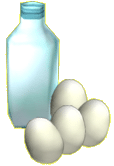

|
| Avec
cette recette, tu pourras préparer un délicieux goûter ! Demande
à une grande personne de t'aider ! |
 |
Liste
des ingrédients
Pour préparer 8 petits ramequins de flans aux oeufs, il te
faut :
 |
4 œufs
|
 |
65
cl de lait |
 |
100
grammes de sucre |
|
une cuillère à café de vanille liquide |
|
 |
Mode de préparation
Comment préparer
tes flans aux oeufs ?
|
Mets
le lait,
le sucre et la vanille dans une casserole. Porte le mélange à ébullition. |
|
Casse
les œufs
et bats-les très fort dans un saladier. Verse progressivement le
lait chaud, mais continue
à fouetter. |
|
Verse
le mélange dans les 8 ramequins et pose les dans un grand plat à
four que tu remplieras d'eau bouillante. |
|
Laisse
cuire environ 45 minutes au bain-marie à 200°C (Th.5) |
Le
conseil d'Alex
| Tu peux ensuite déguster, mais prends bien garde à laisser les flans refroidir, c'est tellement meilleur ! |
 |
Pour
tester tes connaissances
sur le monde de la ferme,
Clique ici !
Et pour en savoir plus, tu peux cliquer sur
l'ingrédient souligné
dans la recette !

|